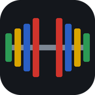

Bitácora de GymPolítica de privacidad
Última actualización: 31 de octubre de 2026
Qué datos guarda la app
Bitácora de Gym guarda tus rutinas, sesiones de entrenamiento, medidas corporales, ajustes y las fotos que tú agregues a tus ejercicios. Los registros se guardan en tu dispositivo, en el almacenamiento del navegador. La app no tiene servidores propios. Puedes elegir respaldarlos en Google Drive o compartir resultados como se describe a continuación.
Google Drive (opcional)
Si decides conectar Google Drive, la app usa el permiso drive.file de Google. Con ese permiso la app solo puede crear y actualizar su propio archivo de respaldo (bitacora-gym-respaldo.json) en tu Drive y leerlo para restaurarlo. No puede ver, leer ni modificar ningún otro archivo de tu Google Drive.
- La conexión ocurre directamente entre tu dispositivo y Google; ningún tercero recibe tus datos ni tu acceso.
- El permiso de acceso se guarda solo en la memoria de la app mientras está abierta y no se almacena en ningún servidor.
- Puedes desconectar Drive desde la app (Rutinas › Google Drive › Desconectar) y retirar el permiso en myaccount.google.com/permissions.
El uso de la información recibida de las APIs de Google cumple con la Política de datos de usuario de los servicios de API de Google, incluidos los requisitos de uso limitado.
Servicios externos
Para funcionar, la app descarga recursos públicos: las imágenes de ejercicios (free-exercise-db, vía jsDelivr), la librería para generar Excel (cdnjs) y las fuentes tipográficas (Google Fonts). Estas descargas no incluyen tus datos de entrenamiento.
Compartir resultados (opcional)
El botón Compartir resultados prepara un informe en tu dispositivo. Puedes revisar el contenido y elegir el período. Las medidas corporales y las notas de sesiones se incluyen solo si marcas sus casillas. Los informes no incluyen fotos, ajustes de cuenta ni datos de conexión.
Al pulsar Abrir en WhatsApp, el resumen se incluye en un enlace que recibe WhatsApp para preparar el mensaje. Tú eliges el destinatario y confirmas el envío. También puedes copiar el texto, descargar un TXT o JSON, o usar el menú de compartir del dispositivo.
Con Compartir… puedes elegir ChatGPT u otra aplicación disponible en el menú de tu dispositivo para recibir el informe. También puedes pegarlo o adjuntarlo manualmente en un mensaje. Los servicios y destinatarios que elijas recibirán el contenido que compartas y aplicarán sus propias políticas de privacidad.
Tus datos son tuyos
Puedes exportar todo en cualquier momento (Rutinas › Respaldo) y borrarlo eliminando los datos del sitio en tu navegador o desinstalando la app. No vendemos ni analizamos tus datos. Tú decides si los respaldas o compartes. La app no usa publicidad ni rastreadores.
Contacto
Para preguntas sobre esta política, abre un reporte en github.com/simecomf/bitacora-gym/issues.